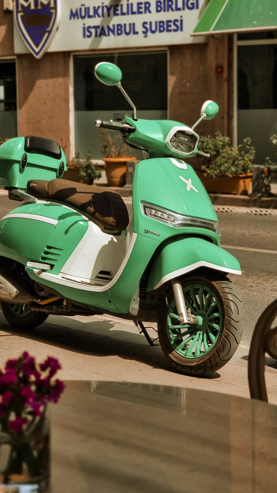
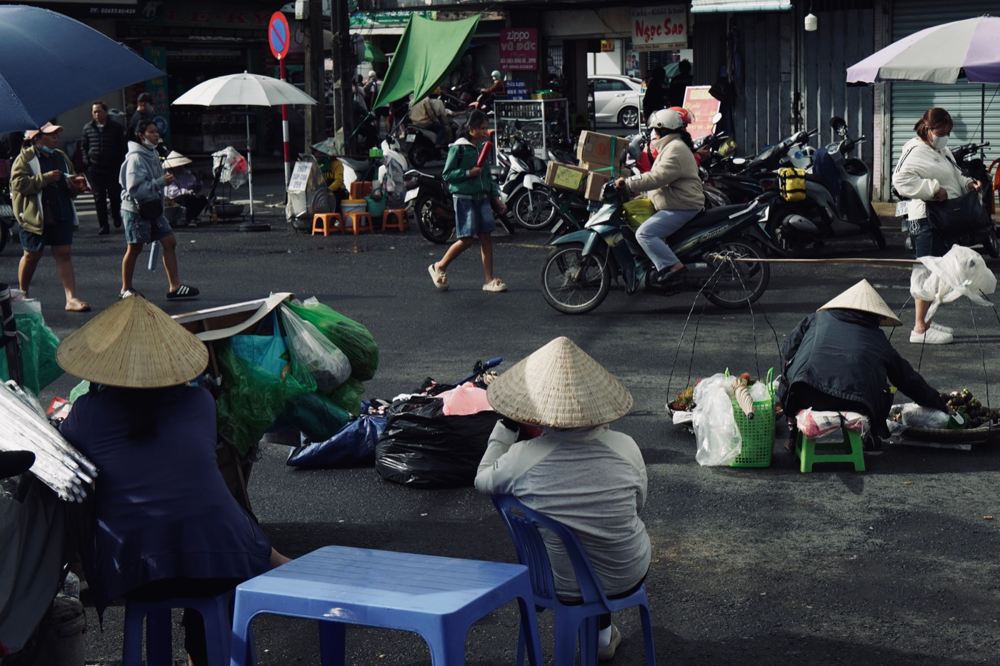

Первая неделя после покупки байка

Даже проверенный и подготовленный байк сначала остаётся незнакомым. Первая неделя нужна не для дальнего маршрута, а для спокойного знакомства с тормозами, габаритами, расходом и повседневными мелочами. Такой подход быстрее создаёт уверенность и помогает вовремя заметить вопрос.
День первый: органы управления
До выезда найди замок зажигания, открывание сиденья и бака, дальний свет, поворотники, сигнал и выключатель двигателя. Уточни, какая ручка отвечает за каждый тормоз. Проверь оба ключа и сфотографируй номерной знак, общий вид и документы.
Первая короткая поездка
Выбери знакомую улицу и дневное время без ливня. Несколько раз плавно тронься, остановись и развернись на широкой площадке. Почувствуй момент схватывания газа, радиус поворота и вес байка при парковке. Не бери пассажира, пока управление не стало предсказуемым.

Что проверить через несколько поездок
- давление и внешний вид обеих шин;
- уровни технических жидкостей по регламенту модели;
- свет, поворотники и стоп-сигнал;
- свободный ход и ощущение тормозных ручек;
- следы свежих подтёков после ночной стоянки;
- не появились ли новые звуки, запах или сильная вибрация.
Не пытайся самостоятельно угадывать причину необычного поведения. Сними короткое видео и покажи специалисту — точная фиксация полезнее описания «что-то звучит не так».
Заправка и реальный расход
Запомни рекомендованное топливо и место крышки бака. Заправься без переполнения и обнули поездочный счётчик, если он есть. По одной поездке расход не оценивают: собери данные хотя бы по двум полным циклам заправки. Инструкция есть в статье как посчитать расход 50cc.
Парковка и защита
Потренируйся ставить байк на боковую и центральную подставку. Выбери постоянное место у дома, проверь освещение и порядок выдачи парковочного талона. Сразу сформируй привычку блокировать руль и использовать дополнительный замок — не откладывай безопасность на потом.
Настрой байк под себя
Выставь зеркала, подготовь держатель телефона без перекрытия приборов и собери компактный набор под сиденьем. Проверь, что шлем сидит плотно, а дождевик не цепляется за колёса. Не покупай много аксессуаров до нескольких поездок: сначала станет понятно, чего действительно не хватает.
Когда вернуться в сервис
Не откладывай проверку, если ухудшились тормоза, руль тянет в сторону, двигатель глохнет, появился запах топлива, подтёк или перегрев. Для обычного контрольного визита заранее запиши пробег и список наблюдений. Обслуживание выполняют по регламенту конкретной модели и фактическому состоянию.
Короткий вывод
За первую неделю нужно освоить управление, проверить базовые системы, наладить парковку и записать реальные наблюдения. После этого можно постепенно увеличивать маршрут. Перед каждой поездкой используй чек-лист на две минуты, а порядок самой сделки описан в статье как проходит покупка байка.